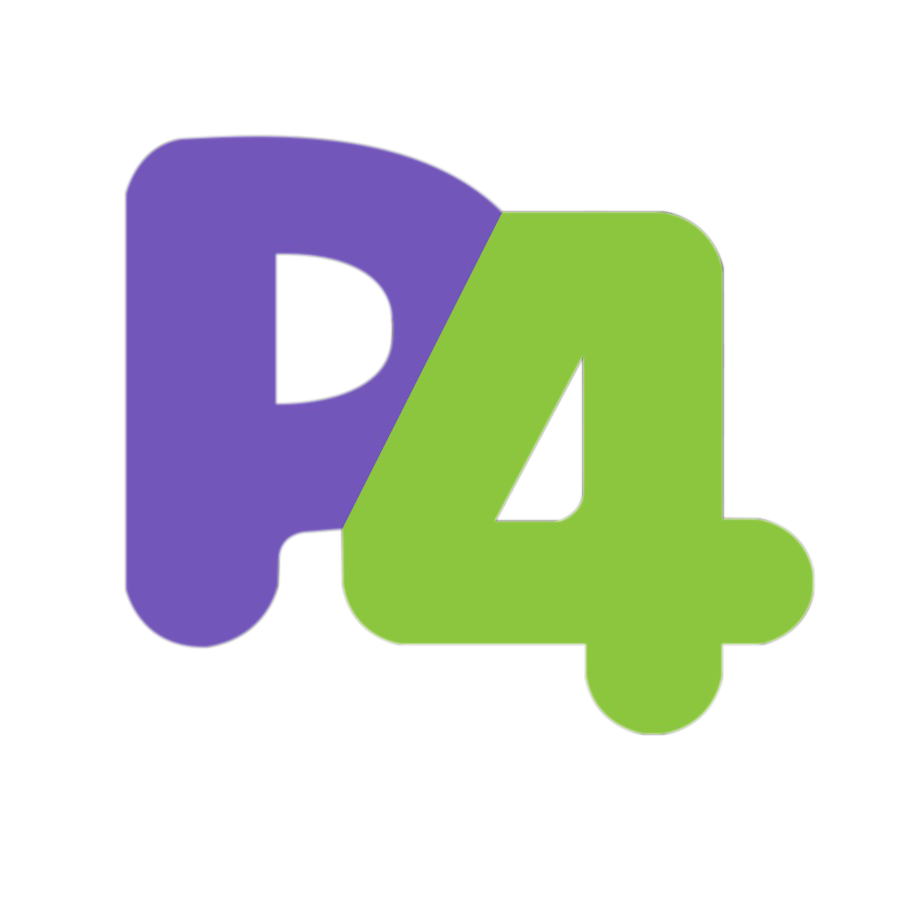
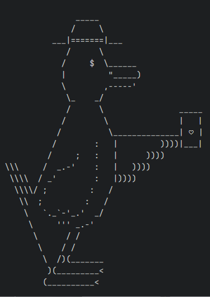
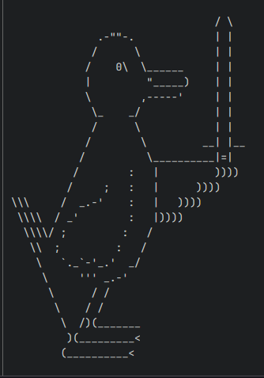
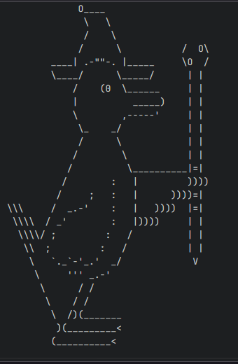
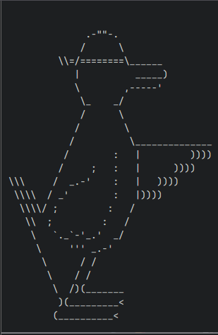
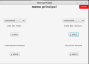

Bonjour je suis César Monnier, je suis actuellement étudiant en 2ème année de BUT informatique.
Je suis actuellement en stage de fin de deuxième année de BUT informatique à la AGH université de Cracovie en Pologne pour lequel je réalise et implémente une VLAN et un load balancer en utilisant le langage de programmation P4.
Je suis à la recherche d'un stage ou d'une alternance en vue de valider mon BUT informatique. Je recherche principalement dans le domaine du back end ou de la base de données. Je suis capable de développer en Java, JavaScript, C, SQL et dans d'autres langages de programmation précisés plus bas dans ce CV. À l'écoute et studieux je suis prêt à apprendre de nouvelles technologies et langages de programmation si besoin comme pour mon stage de fin de deuxième année pour lequel j'ai appris à développer en P4.
Je souhaite commencer à travailler une fois mon BUT informatique obtenu car je souhaite mettre en pratique les compétences que j'ai acquises durant mes études et mes différents stages. Je suis motivé à travailler dans le domaine de l'informatique et je suis prêt à apprendre de nouvelles technologies pour pouvoir évoluer dans ce domaine.
Je suis quelqu'un travaillant mieux en équipe car cela permet de développer ma créativité et d'apprendre plus rapidement en apprenant de mes collègues.
Comme dit précédemment je suis vraiment attiré par le domaine du développement back end et de la base de données que cela soit au sein d'une ESN ou directement dans le service informatique d'une entreprise. Je suis également ouvert à d'autres domaines de l'informatique comme le développement front end ou le développement mobile si cela me permet de mettre en pratique les compétences que j'ai acquises durant mes études et mes différents stages.
Compétences
Langages de programmation
Java
C
HTML
CSS
SQL
JavaFX

P4
JavaScript
Compétences supplémentaires
Gestion de projet: Méthodologie Agile, Scrum
Outils: Git, Visual Studio Code, IntelliJ, Android Studio
Langue : Français Anglais niveau C1
IA générative: Copilot, ChatGPT
Soft skills
Travail en équipe : Lors de mes études tous les projets ont été réalisés en équipe que ce soit la réalisation du jeu Coincoin Quest ou le logiciel d'échange culturel.
Curiosité : La recherche effectuée pour apprendre à réaliser la VLAN demandée lors de mon stage
Autonomie : mon stage de fin d'études a été réalisé en autonomie.
Formation
BUT informatique : 09/2023 à aujourd'hui IUT A Lille
Formation concepteur designer UI : 11/2021-06/2022 ID Formation Lille
IUT mesures physiques : 09/2017-07/2020 Université des Hauts-de-France Maubeuge
Expérience Professionnelle
Stage de BUT deuxième année : conception et implémentation d'une VLAN et d'un load balancer en P4 02/04/2024-07/07/2024
La petite Belgique : plongeur et cuisinier 29/03/2024-01/04/2024
Coincoin Quest est un RPG tour par tour dungeon crawler où le joueur incarne un canard devant avancer dans un donjon
en affrontant différents monstres et boss. Au fur et à mesure de l'avance dans le donjon le joueur débloque de nouvelles compétences.
Le jeu permet de choisir parmi quatre classes ayant chacune ses propres compétences et des statistiques différentes : le Palaçon, un guerrier de la lumière, le Gambler reposant sur la chance, le Canard-Mage spécialiste
des arts occultes et le Canard-Monk réglant les problèmes avec ses poings. Le jeu a été réalisé en équipe de 5 personnes en appliquant la philosophie agile en utilisant la méthode Scrum. Le jeu a été totalement réalisé en Java devant être affiché dans le terminal.
Mon rôle dans ce projet fut la réalisation des différents personnages au niveau back end avec l'aide d'un autre membre du groupe.




Ce que j'ai appris sur ce projet c'est la gestion du temps car nous devions appliquer la méthode Scrum, avec des runs de 2h ce qui nous obligeait à bien organiser notre temps.
Le plus difficile dans ce projet fut la gestion du temps et des différentes tâches à faire en tant que Scrum Master en plus de la réalisation de la tâche de développeur.
Logiciel d'échange culturel
Ce projet a pour but de réaliser une application permettant de créer des binômes d'étudiants pour des échanges culturels.
L'application permet aux étudiants de s'inscrire en renseignant leurs informations personnelles et leurs centres d'intérêt.
Ensuite l'application utilise un algorithme de matching pour créer des binômes d'étudiants ayant des centres d'intérêt communs.
Le projet a été réalisé en équipe de trois personnes en utilisant du Java et JavaFX. Je me suis occupé de la partie back end avec un autre membre du groupe, ainsi que de la réalisation de la partie maquettage du projet. Je suis principalement occupé de la réalisation des classes servant à la création et l'utilisation des binômes.

La plus grosse difficulté pour ce projet fut la mauvaise connaissance du langage JavaFX ce qui m'a empêché de participer à la réalisation de la partie front end qui n'a pas atteint nos attentes.
Ce que j'ai appris c'est qu'il faut savoir être polyvalent lors de la réalisation d'un projet en petite équipe.
Ce que je ferais différemment serait de m'efforcer de participer à la partie JavaFX malgré mon faible niveau pour soulager la personne ayant été en charge de celle-ci.
Ce projet en binôme a pour but de réaliser des API REST sur le thème de la gestion des déchets. Pour ce faire nous avons dû créer une base de données pour alimenter nos API. Nous avons aussi dû réaliser des tests pour vérifier le bon fonctionnement de nos API. Ce projet, bien qu'accès théorique, avait pour but de vérifier nos acquis sur les servlets et les API.
Ce que j'ai réalisé lors de ce projet fut la création de la base de données et la création des tests et d'une partie des API demandées.
Ce que j'ai appris sur ce projet c'est comment bien répartir les tâches en fonction des forces et faiblesses de chaque membre de l'équipe mais aussi pour optimiser le temps disponible.
Le gros des difficultés a été rencontré vers la fin du projet lors de la création du système de session que nous n'avons pas eu le temps de réaliser.
Ce que j'ai appris c'est comment coder une API en REST.
Shoot em up en TypeScript
Le but de ce projet en trinôme est de réaliser un jeu de type shoot em up 2D en utilisant le langage TypeScript.
Je me suis occupé de la réalisation de la partie back end, plus précisément des classes pour les joueurs et les ennemis.
Nous avons opté pour un shoot em up classique où nous jouions en affrontant d'autres joueurs.
Ce projet m'a permis de développer mes compétences en JavaScript, plus précisément comment coder en TypeScript. J'ai précisément appris à structurer un projet en TypeScript et à utiliser les classes et les interfaces dans le but de développer un jeu vidéo en TypeScript permettant à plusieurs joueurs de jouer ensemble.
Par manque de temps nous n'avons pas pu réaliser tout ce qui était demandé comme le système de highscore.
Ce que je ferais différemment serait une meilleure priorisation des différents projets car nous avions beaucoup à réaliser en peu de temps mais aussi une meilleure communication entre les membres du groupe.